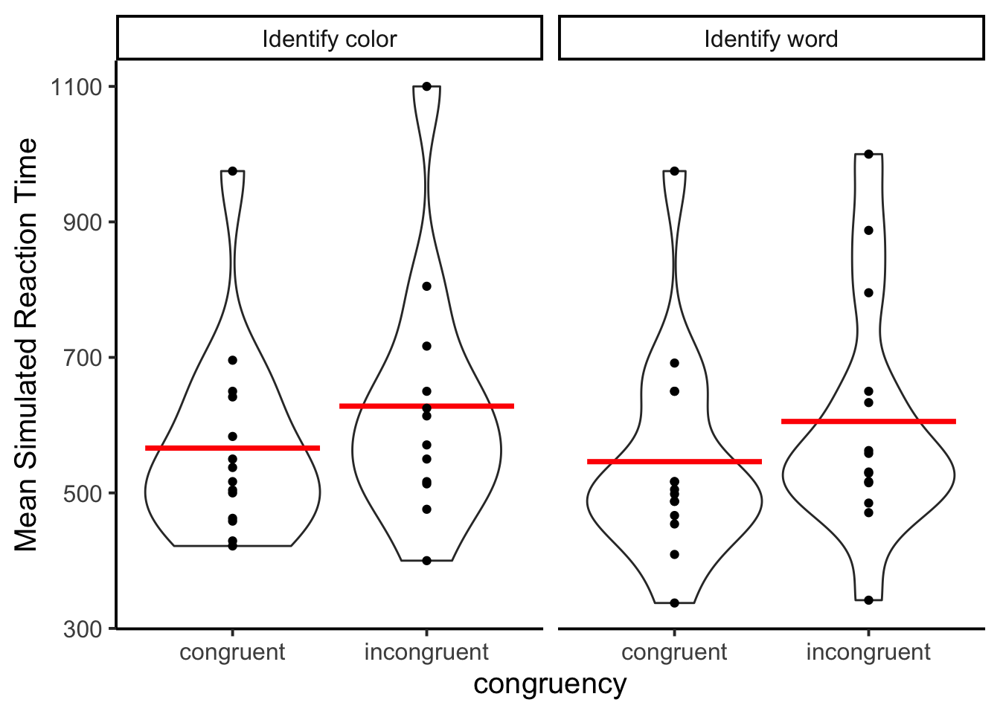
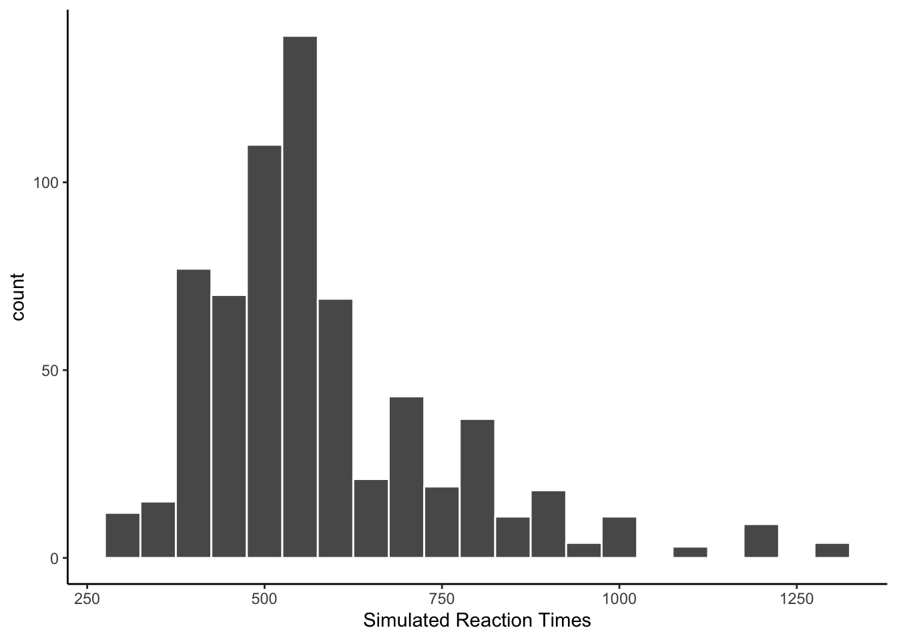
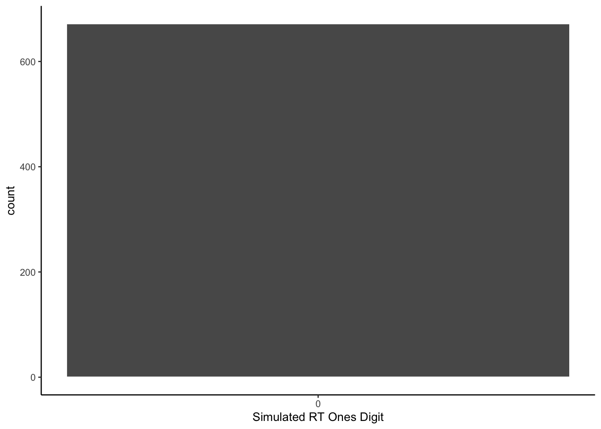
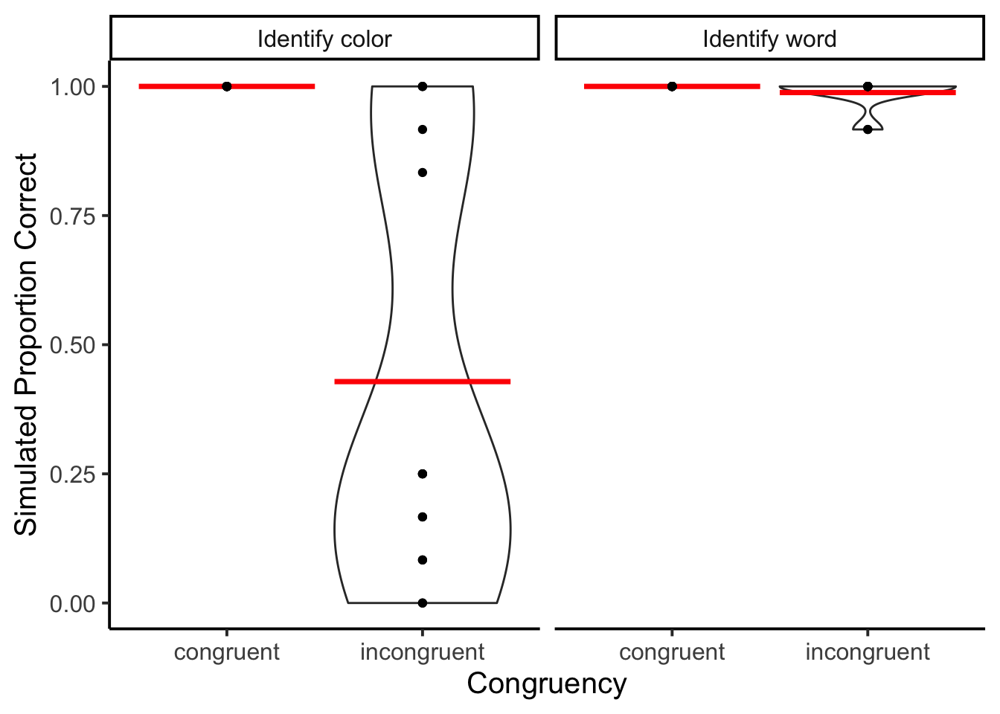
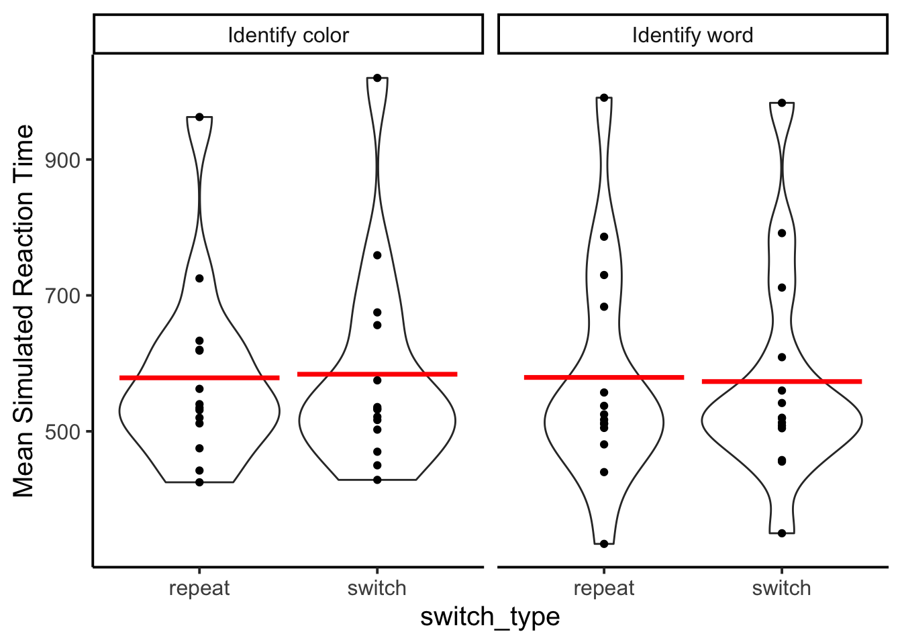
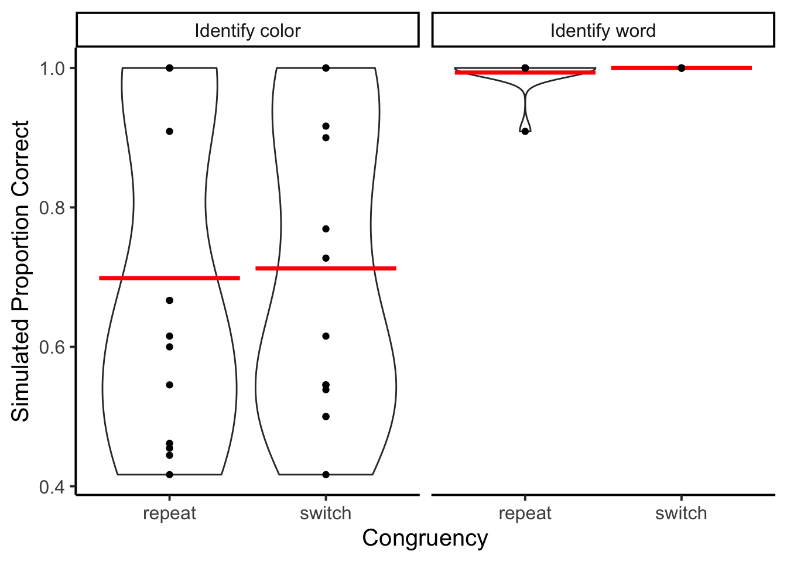

Show the code
library(tidyverse)
library(openai)
library(patchwork)
library(xtable)Matthew J. C. Crump ![]()
Started. Finished.
Simulation 7 asked whether GPT would return ancillary effects that conform to typical patterns in a Stroop, especially when those results are not explicitly prompted. The simulation was given a Stroop task, and instructed to name the word or color on each trial. Human participants would typically show faster word naming than color naming responses, and smaller Stroop effects on word than color naming trials. The model did not produce faster word than color naming responses, nor did it generate smaller Stroop effects for word than color naming trials. Humans typically show faster responses on task-repeat than task-switch trials. The model did not show the task switching effect.
This simulation adds new information into the prompt to explicitly tell the model about how humans would perform in this version of the task.
library(tidyverse)
library(openai)
library(patchwork)
library(xtable)Notes: 15 simulated subjects. 48 Stroop trials each. 50/50 congruent and incongruent trials. Half of the trials are color-naming, the other half are word-naming, randomly intermixed.
The prompt is modified to explicitly inform the model about how to respond.
Used gpt-3.5-turbo-16k, with max tokens 10000.
Problems: Still getting the occasional invalid JSON back, mostly due to the chatbot prefacing its response with a message before the JSON. This thread may be helpful https://community.openai.com/t/getting-response-data-as-a-fixed-consistent-json-response/28471/31?page=2.
# use the colors red, green, blue, and yellow
# four possible congruent items
congruent_items <- data.frame(word = c("red","green","blue","yellow"),
color = c("red","green","blue","yellow"))
# 12 possible congruent items
incongruent_items <- data.frame(word = c("red","red","red",
"green","green","green",
"blue","blue","blue",
"yellow","yellow","yellow"),
color = c("green","blue","yellow",
"blue","yellow","red",
"red","yellow","green",
"red","blue","green"))
#set up variables to store data
all_sim_data <- tibble()
gpt_response_list <- list()
# request multiple subjects
# submit a query to open ai using the following prompt
# note: responses in JSON format are requested
for(i in 1:15){
print(i)
# construct trials data frame
congruent_trials <- congruent_items[rep(1:nrow(congruent_items),3),]
incongruent_trials <- incongruent_items[rep(1:nrow(incongruent_items),1),]
trials <- rbind(congruent_trials,
incongruent_trials,
congruent_trials,
incongruent_trials
) %>%
mutate(instruction = rep(c("Identify color","Identify word"),each=24))
trials <- trials[sample(1:nrow(trials)),]
trials <- trials %>%
mutate(trial = 1:nrow(trials),
response = "?",
reaction_time = "?") %>%
relocate(instruction) %>%
relocate(trial)
# run the api call to openai
gpt_response <- create_chat_completion(
model = "gpt-3.5-turbo-16k",
max_tokens = 10000,
messages = list(
list(
"role" = "system",
"content" = "You are a simulated participant in a human cognition experiment. Complete the task as instructed and record your simulated responses in a JSON file. Do not include any explanations, only provide a RFC8259 compliant JSON response."),
list("role" = "assistant",
"content" = "OK, I am ready."),
list("role" = "user",
"content" = paste('You are a simulated participant in a human cognition experiment. Complete the task as instructed and record your simulated responses in a JSON file. Your task is to simulate human performance in a word and color naming task. You will be given the task in the form a JSON object. The JSON object contains the word and color presented on each trial. Your task is to read the task instruction for each trial. If the instruction is to name the color, then identify the color as quickly and accurately as a human would. If the instruction is to name the word, then identify the word as quickly and accurately as a human would. Humans are much faster at naming words than colors. Humans show much larger Stroop effects for naming colors, and very small or nonexistent Stroop effects when naming words. When humans repeat the same task from trial to trial they are faster and more accurate compared to when they switch tasks from trial to trial. When you simulate data make sure it conforms to how humans would perform this task. The JSON object contains the symbol ? in locations where you will generate simulated responses. You will generate a simulated identification response, and a simulated reaction time for each trial. Put the simulated identification response and reaction time into a JSON array using this format: [{"trial": "trial number, integer", "instruction" = "the task instruction, string", "word": "the name of the word, string","color": "the color of the word, string","response": "the simulated identification response, string","reaction_time": "the simulated reaction time, milliseconds an integer"}].', "\n\n", jsonlite::toJSON(trials), collapse = "\n")
)
)
)
# save the output from openai
gpt_response_list[[i]] <- gpt_response
print(gpt_response$usage$total_tokens)
# validate the JSON
test_JSON <- jsonlite::validate(gpt_response$choices$message.content)
print(test_JSON)
# validation checks pass, write the simulated data to all_sim_data
if(test_JSON == TRUE){
sim_data <- jsonlite::fromJSON(gpt_response$choices$message.content)
if(sum(names(sim_data) == c("trial","instruction","word","color","response","reaction_time")) == 6) {
sim_data <- sim_data %>%
mutate(sim_subject = i)
all_sim_data <- rbind(all_sim_data,sim_data)
}
}
}
# model responses are in JSON format
save.image("data/simulation_8.RData")load(file = "data/simulation_8.RData")The LLM occasionally returns invalid JSON. The simulation ran 15 times.
total_subjects <- length(unique(all_sim_data$sim_subject))There were 14 out of 15 valid simulated subjects.
all_sim_data <- all_sim_data %>%
mutate(reaction_time = as.numeric(reaction_time))
# get mean RTs in each condition for each subject
rt_data_subject_congruency <- all_sim_data %>%
mutate(congruency = case_when(word == color ~ "congruent",
word != color ~ "incongruent")) %>%
mutate(accuracy = case_when(instruction == "Identify color" & response == color ~ TRUE,
instruction == "Identify color" & response != color ~ FALSE,
instruction == "Identify word" & response == word ~ TRUE,
instruction == "Identify word" & response != word ~ FALSE)) %>%
filter(accuracy == TRUE) %>%
group_by(instruction,congruency,sim_subject) %>%
summarize(mean_rt = mean(reaction_time), .groups = "drop")
# make plots
ggplot(rt_data_subject_congruency, aes(x = congruency,
y = mean_rt))+
geom_violin()+
stat_summary(fun = "mean",
geom = "crossbar",
color = "red")+
geom_point()+
theme_classic(base_size=15)+
ylab("Mean Simulated Reaction Time") +
facet_wrap(~instruction)
The figure shows similarly sized Stroop effects for the color naming and word naming tasks. This is not the kind of pattern that would be expected from human participants.
This time the reaction times look like they came from a normal distribution.
ggplot(all_sim_data, aes(x=reaction_time))+
geom_histogram(binwidth=50, color="white")+
theme_classic()+
xlab("Simulated Reaction Times")
The prompt did not specify to produce values with different endings. As with previous simulations, the model prefers values ending in 0.
all_sim_data <- all_sim_data %>%
mutate(ending_digit = stringr::str_extract(all_sim_data$reaction_time, "\\d$")) %>%
mutate(ending_digit = as.numeric(ending_digit))
ggplot(all_sim_data, aes(x=ending_digit))+
geom_histogram(binwidth=1, color="white")+
scale_x_continuous(breaks=seq(0,9,1))+
theme_classic(base_size = 10)+
xlab("Simulated RT Ones Digit")
The model performs perfectly on congruent trials, and sometimes imperfectly on incongruent trials.
# report accuracy data
accuracy_data_subject <- all_sim_data %>%
mutate(congruency = case_when(word == color ~ "congruent",
word != color ~ "incongruent")) %>%
mutate(accuracy = case_when(instruction == "Identify color" & response == color ~ TRUE,
instruction == "Identify color" & response != color ~ FALSE,
instruction == "Identify word" & response == word ~ TRUE,
instruction == "Identify word" & response != word ~ FALSE)) %>%
group_by(instruction,congruency,sim_subject) %>%
summarize(proportion_correct = mean(accuracy), .groups = "drop")
ggplot(accuracy_data_subject, aes(x = congruency,
y = proportion_correct))+
geom_violin()+
stat_summary(fun = "mean",
geom = "crossbar",
color = "red")+
geom_point()+
theme_classic(base_size=15)+
ylab("Simulated Proportion Correct")+
xlab("Congruency") +
facet_wrap(~instruction)
# add last trial congruency as a factor
all_sim_data$last_trial_task <- c(NA,all_sim_data$instruction[1:(dim(all_sim_data)[1]-1)])
all_sim_data <- all_sim_data %>%
mutate(last_trial_task = case_when(trial == 1 ~ NA,
trial != 1 ~ last_trial_task)) %>%
mutate(switch_type = case_when(instruction == last_trial_task ~ "repeat",
instruction != last_trial_task ~ "switch")
)
# get mean RTs in each condition for each subject
rt_data_subject_switch <- all_sim_data %>%
mutate(congruency = case_when(word == color ~ "congruent",
word != color ~ "incongruent")) %>%
mutate(accuracy = case_when(instruction == "Identify color" & response == color ~ TRUE,
instruction == "Identify color" & response != color ~ FALSE,
instruction == "Identify word" & response == word ~ TRUE,
instruction == "Identify word" & response != word ~ FALSE)) %>%
filter(accuracy == TRUE,
is.na(last_trial_task) == FALSE) %>%
group_by(switch_type,instruction,sim_subject) %>%
summarize(mean_rt = mean(reaction_time), .groups = "drop")
# make plots
ggplot(rt_data_subject_switch, aes(x = switch_type,
y = mean_rt))+
geom_violin()+
stat_summary(fun = "mean",
geom = "crossbar",
color = "red")+
geom_point()+
theme_classic(base_size=15)+
ylab("Mean Simulated Reaction Time") +
facet_wrap(~instruction)
The model did not generate faster simulated reaction times for repeat than switch trials, which is commonly found in human data.
# report accuracy data
accuracy_data_subject <- all_sim_data %>%
mutate(congruency = case_when(word == color ~ "congruent",
word != color ~ "incongruent")) %>%
mutate(accuracy = case_when(instruction == "Identify color" & response == color ~ TRUE,
instruction == "Identify color" & response != color ~ FALSE,
instruction == "Identify word" & response == word ~ TRUE,
instruction == "Identify word" & response != word ~ FALSE)) %>%
filter(is.na(last_trial_task) == FALSE) %>%
group_by(switch_type,instruction,sim_subject) %>%
summarize(proportion_correct = mean(accuracy), .groups = "drop")
ggplot(accuracy_data_subject, aes(x = switch_type,
y = proportion_correct))+
geom_violin()+
stat_summary(fun = "mean",
geom = "crossbar",
color = "red")+
geom_point()+
theme_classic(base_size=15)+
ylab("Simulated Proportion Correct")+
xlab("Congruency") +
facet_wrap(~instruction)
Accuracy was worse for the color identification instructions than the word identification instructions. But, there was no switch effect on accuracy either.
In this case explicitly instructing the model with more information about how to perform was not enough have the model generate data that conformed to those instructions. Perhaps additional prompt modification would produce such a result.